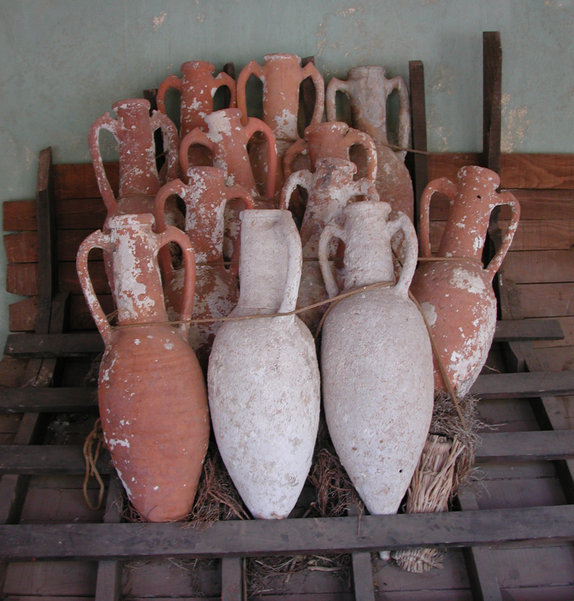
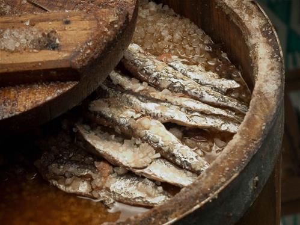
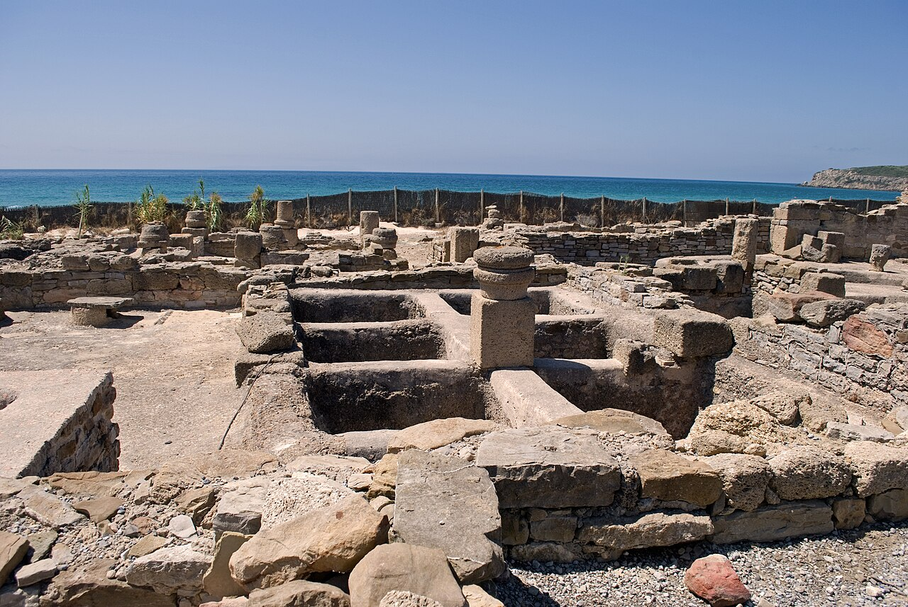

Lo ponían en todo. Y no era ninguna exageración.
Imagina un condimento que aparece en prácticamente todas las recetas de un imperio de cincuenta millones de personas. En los guisos, en las salsas, en los postres, en el pan. Un líquido pardo, intenso, salino, que lo mejoraba todo sin que nadie pudiera explicar del todo por qué. Los romanos lo llamaban garum, y era tan imprescindible como hoy lo es la sal.
Y lo que muchos no saben es que Tarraco era uno de los grandes centros de producción de esta salsa en Hispania. Las mismas aguas que hoy bañan nuestra costa fueron testigo de una industria que alimentó a Roma durante siglos.

Pescado fermentado. Así de simple, así de complejo.
El garum se obtenía fermentando pescado con sal durante semanas o meses, al sol, en grandes recipientes de piedra o cerámica llamados cetariae. El resultado era un líquido concentrado, rico en glutamato natural —lo que hoy llamaríamos umami— que los romanos usaban como condimento universal en lugar de la sal.
Se usaban principalmente caballa, atún, anchoa y sardina. Las vísceras, la sangre y las partes menos nobles del pescado eran los ingredientes más comunes en el garum de uso cotidiano. Las versiones más refinadas —el garum sociorum, producido en Cartagena— alcanzaban precios desorbitados y se reservaban para los más ricos.

El garum aportaba salinidad pero también profundidad de sabor. No era un sustituto, era una mejora.
Dos mil años antes de que los japoneses nombraran el umami, los romanos ya lo usaban a diario sin saber qué era.
La fermentación al sol podía durar entre dos y doce meses según la calidad buscada. Lento, como todo lo que vale.
«No hay casi ninguna salsa ni guiso que no lleve garum. Incluso en los postres aparece.»
Plinio el Viejo · Historia Natural, siglo I d.C.Se producía aquí. A orillas de nuestro mar.
La arqueología lo confirma: en la costa de Tarraco existían factorías de salazón y producción de garum. Las cetariae —grandes piletas excavadas en la roca o construidas en piedra— se llenaban de capas alternadas de pescado y sal y se dejaban fermentar al sol mediterráneo. El resultado se filtraba y envasaba en ánforas que viajaban desde el puerto de Tarraco hasta cualquier rincón del Imperio.
No era una actividad marginal. Era una industria exportadora. Las ánforas de garum hispano han aparecido en excavaciones de Londres, Lyon, Egipto y Pompeya. Nuestra costa alimentó el paladar del mundo romano.

Nunca desapareció del todo.
Con la caída del Imperio Romano, la producción industrial de garum desapareció. Pero el instinto culinario que lo había creado —ese deseo de concentrar el sabor del mar en un líquido— no murió. Se transformó. Las anchoas en salazón, tan presentes en la cocina mediterránea, son su heredera más directa. La colatura di alici italiana, producida aún hoy en Cetara (Campania), es prácticamente garum.
Y en Asia, la tradición nunca se interrumpió. El nam pla tailandés, el nước chấm vietnamita, el patis filipino: todos son salsas de pescado fermentado que funcionan exactamente igual que el garum romano. Sabores distintos, mismo principio, mismo resultado: umami puro.
¿Cómo usarlo hoy?
Guía práctica para cocinar con garum modernoNo puedes hacer garum en casa en dos días. Pero puedes usarlo. Estas son las mejores opciones modernas:
Nam pla / Nước mắm
Tailandia o Vietnam. Los más fieles al garum original. Se encuentran en tiendas asiáticas. Unas gotas en un sofrito lo cambian todo.
Colatura di alici
La versión italiana, producida en Campania. Más cara, más fina. La encontrarás en tiendas de productos italianos.
Anchoas en aceite
Disuelve una anchoa en el sofrito. No sabrá a anchoa. Sabrá a profundidad. A mar. A garum.
Garum artesanal
Algunos productores españoles ya elaboran garum moderno. Busca garum de atún o de caballa en tiendas gourmet.
Regla general: empieza con pocas gotas. Es intenso. Su objetivo no es que el plato sepa a pescado, sino que todo sepa más a sí mismo.
Una salsa que Roma puso en todo, que Tarraco fabricó y exportó, y que hoy sobrevive en las cocinas de Asia y en las anchoas de nuestra despensa. El garum no murió. Solo cambió de nombre.
El moretum: la salsa romana de Tarraco
Queso, ajo, hierbas y aceite. El acompañante del garum en la mesa romana. Una preparación humilde que Virgilio puso en verso y que en Tarraco ya se comía hace dos mil anys.
Leer el artículo →Gourmets de Tarragona · Curiosidades gastronómicas